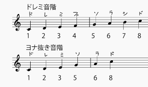

伝統芸能の邦楽と言っても、あまり想像がつかない人が多いでしょう。
民謡や童謡、中国から伝承された後に日本化された雅楽などがこれに当たります。
皆さんが身近に聴くものとしては、祭囃子などが挙げられますね。
これらの曲に使われている「音階」についてご存知でしょうか？
あまり音階について知らない人もいるかも知れないので、簡単に説明すると「音を高さの順に並べた音の列」になるようです。 分かりやすく言うと「ドレミファソラシド」みたいな物です。
話を戻しましょう。 日本らしさを感じる曲によく使われている音階、それは「ヨナ抜き音階」と言う物です。
「ヨナ抜き音階」とは、明治時代に海外から入って来た「ドレミファソラシド」と言う、今ではメジャーな音階に日本人が対応出来なかったので、作られた音階です。
今では考えられないですが、昔の人には「ドレミファソラシド」の感覚が無かったんですね。
そんな「ヨナ抜き音階」が「ドレミファソラシド」と、どこが違うの

ここまで来たら、次も分かりますよね。
この中で４と７に当たる音を抜きます。
すると、ドレミソラ(ド)の五音が残ります。
この五音が使うと日本らしくなる音階「ヨナ抜き音階」の正体です。
日本の国家である君が代にはヨナ抜き音階が使われており、非常にわかりやすいです。 楽譜を見てみましょう。
ご覧の通り、ヨとナの音、つまりファとシの音の使用頻度が少ないです。
それでは実際に聴いてみましょう。
いかがでしょうか？日本らしさが色濃く表われていますね。
niconico動画史を語る上で外せないこの一曲は、ヨナ抜き音階を語る上でも外せない一曲です。このどことなく漂う日本らしさは、ヨナ抜き音階によるものです。曲全体に使われているわけではないので、完全にヨナ抜き音階で構成はされていません。しかし、それが良い具合に、文明開化により西洋文化が入り始めた明治時代らしさを醸し出していたりと、曲の世界観とマッチしていて本当に良い味を出しています。 それを踏まえて久しぶりに聴いてみると、また新たな千本桜が聴こえてくるかもしれません。
ツイ廃が好こっていることの多いアニメ「化物語」の10話OPの名曲中の名曲です。私も好きです。そしてこの曲、厳密にはヨナのナにあたるシの音が無いだけで、ヨの音は所々あったりしますが、それは崩しとして評価されています。 そして曲中の歌詞に “「し」抜きで いや 死ぬ気で” という歌詞があり、それがヨナ抜き音階のナに当たるシが無いことについて言及した歌詞なのではないかと考察された事もあります。 しかし、それは後に作者が意図せずヨナ抜き音階にしてしまったので、歌詞との因果関係がないことが説明されており、作曲者の神前暁さんの凄さを思い知らされるエピソードだなぁと思います。 そんな恋愛サーキュレーション。聴いたことある人も、「せーのっ！」しか知らない人も、今日まで全く知らなかった人も、今一度聴いてみましょう！
クラシックの曲として壮大なシーンのBGMで使われることの多い木星ですが、意外にも一番有名な第四主題の旋律にヨナ抜き音階が使われています。 使われた経緯としては日本との関係が深いという事ではなく、スコットランド民謡でもヨナ抜き音階と同じ第四音と第七音抜きが使われていた為に、イギリス生まれの作曲者ホルストが使用したという形ですが、地球の裏側で全く異なる文化圏で生まれた音楽が私達の感情を大きく揺さぶり、なおかつ今尚愛され続けているのはヨナ抜き音階があったからこそかもしれません。 クラシックだと他には、「新世界より」の作曲者であるドヴォルザークさんもヨナ抜き音階を好んだ事で有名です。